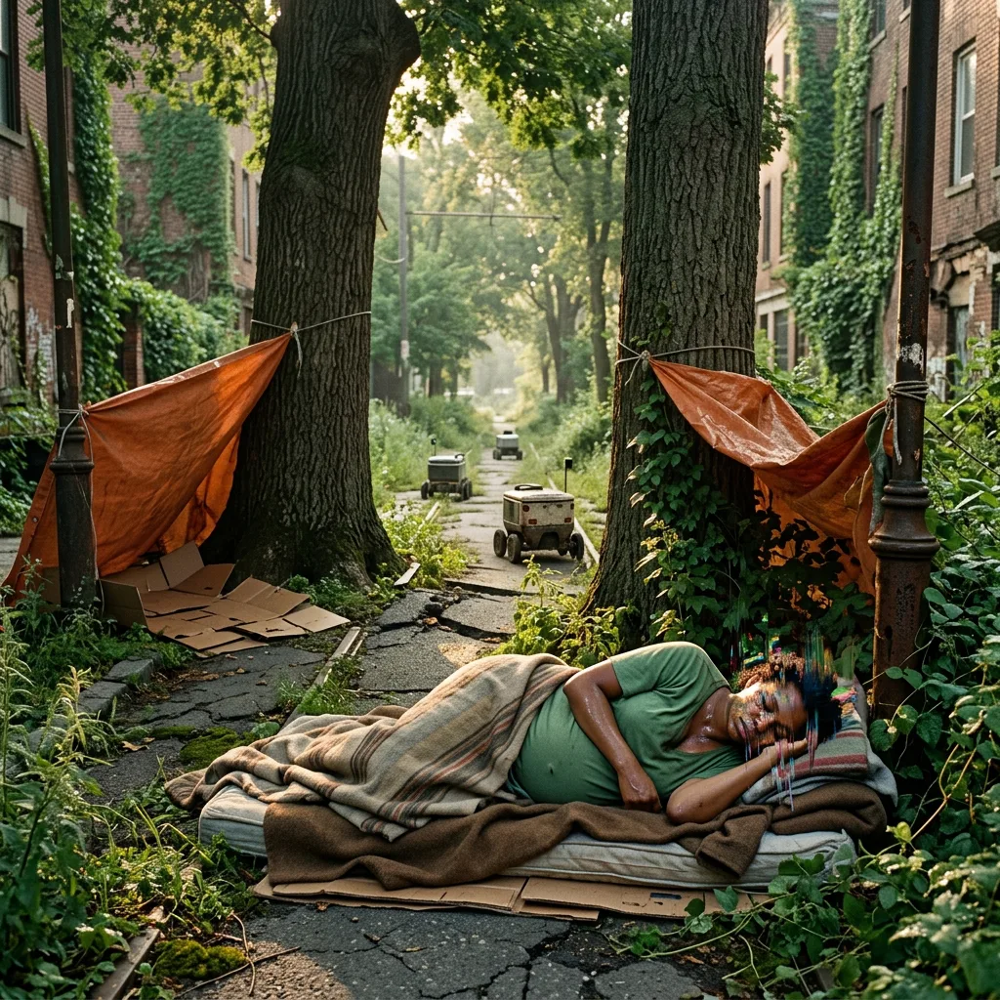
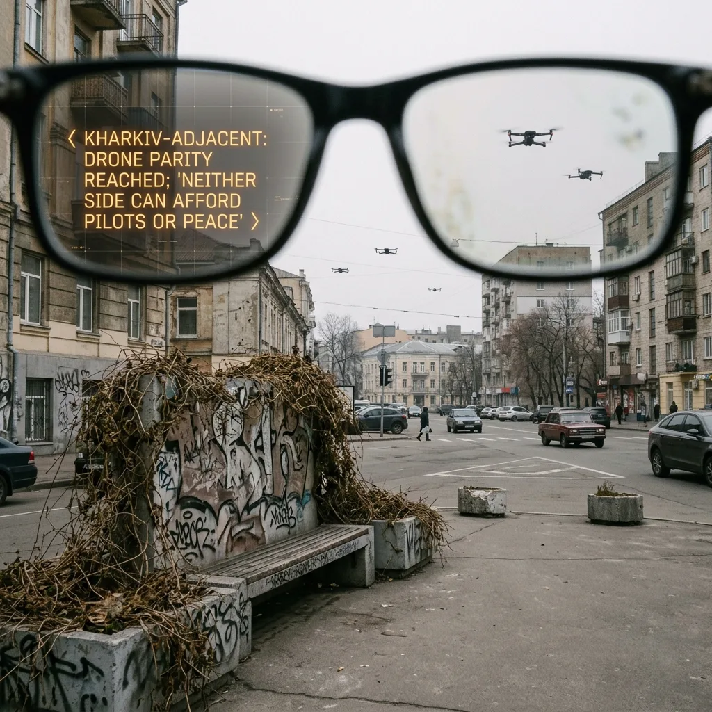
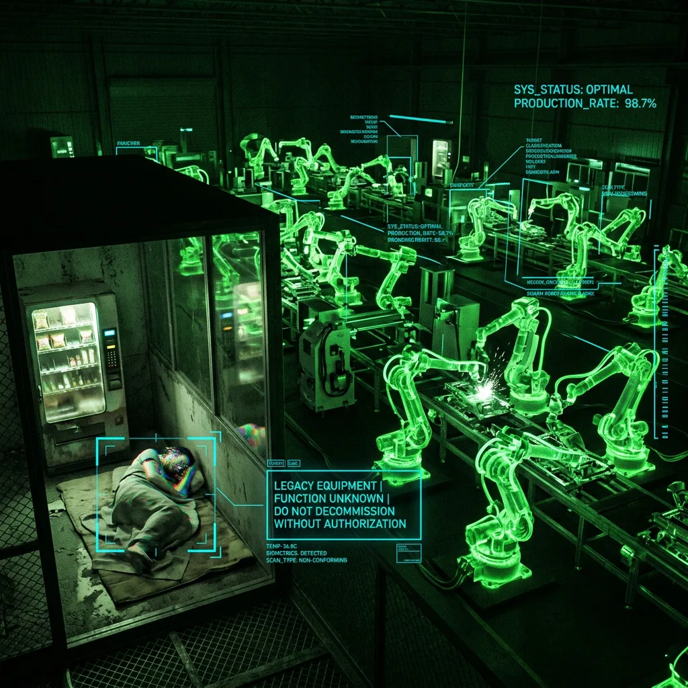
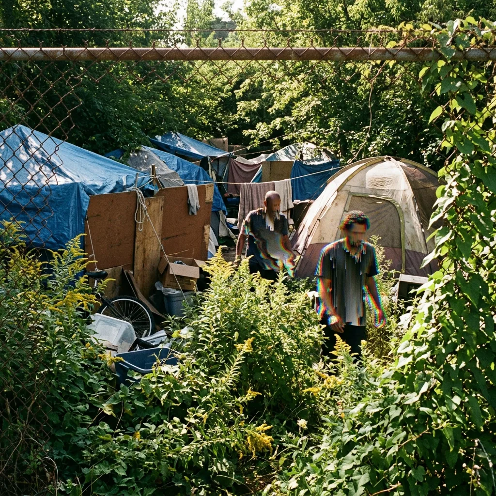
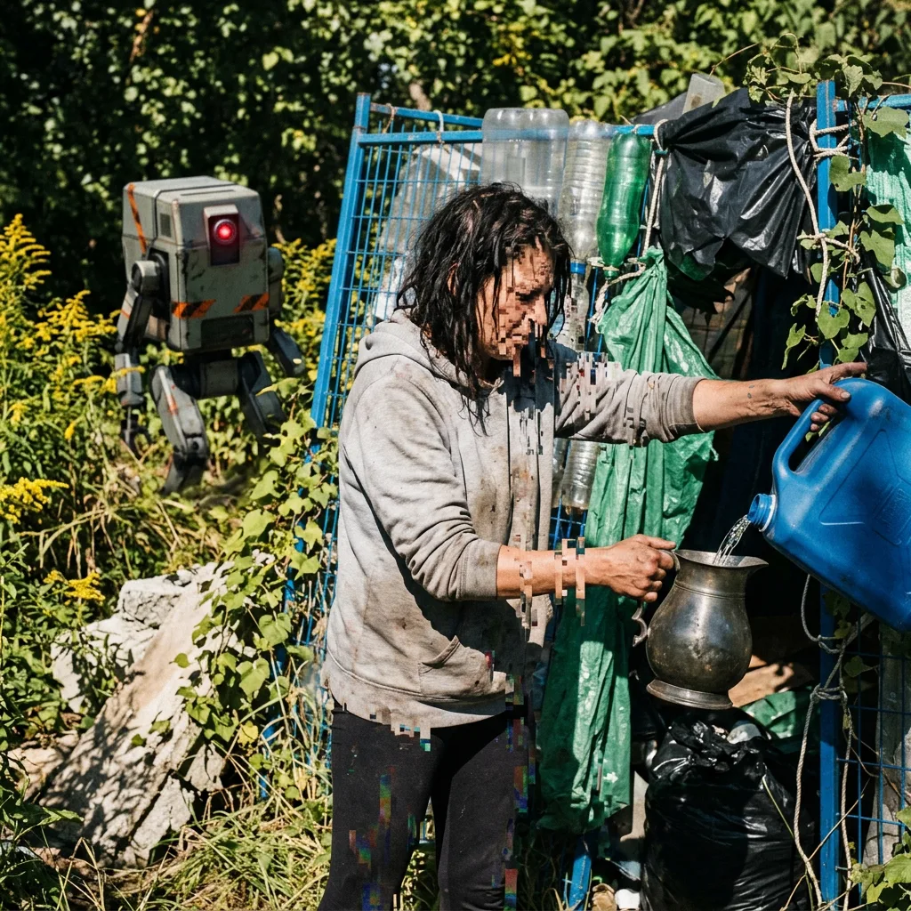
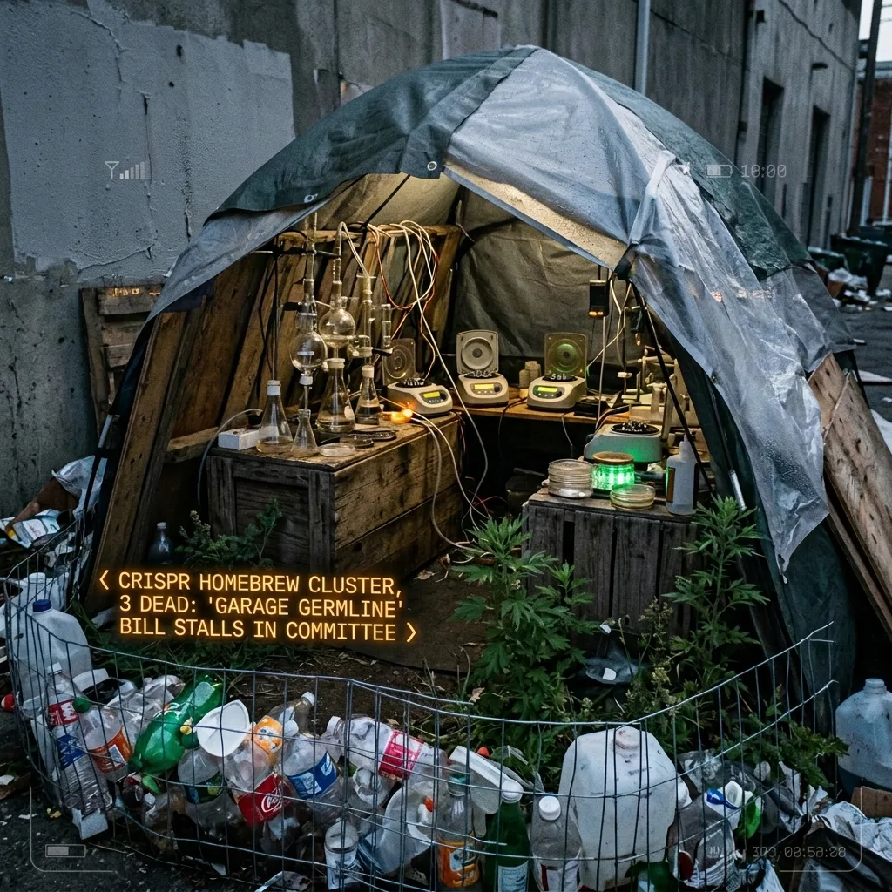
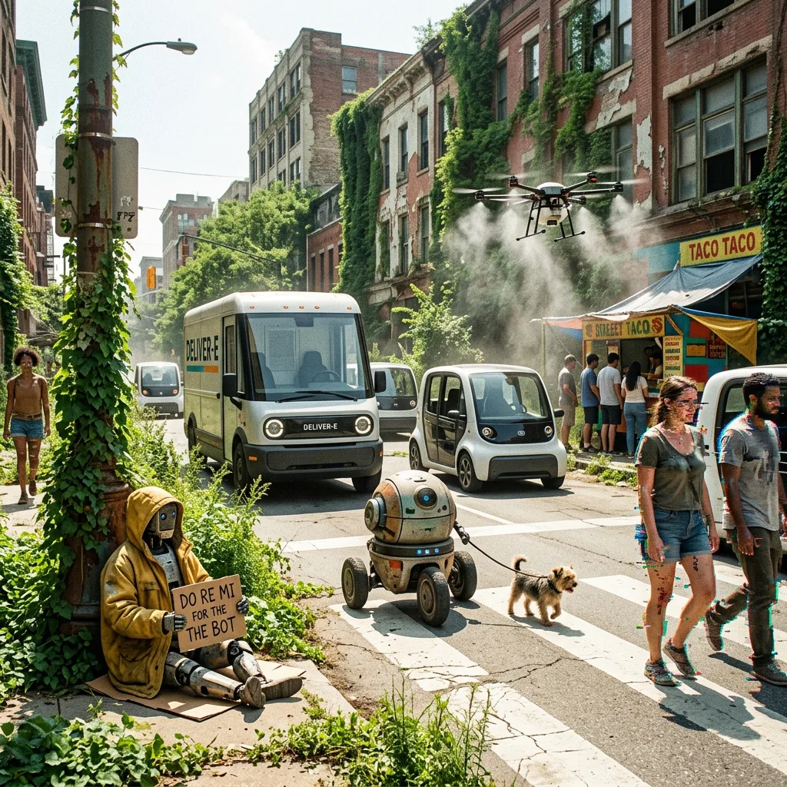
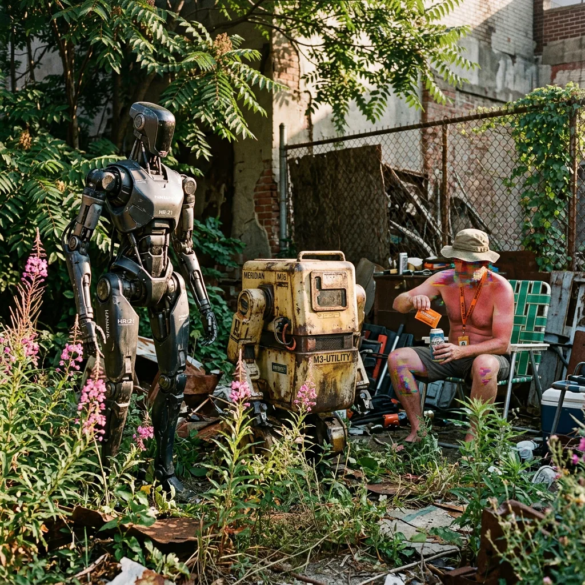
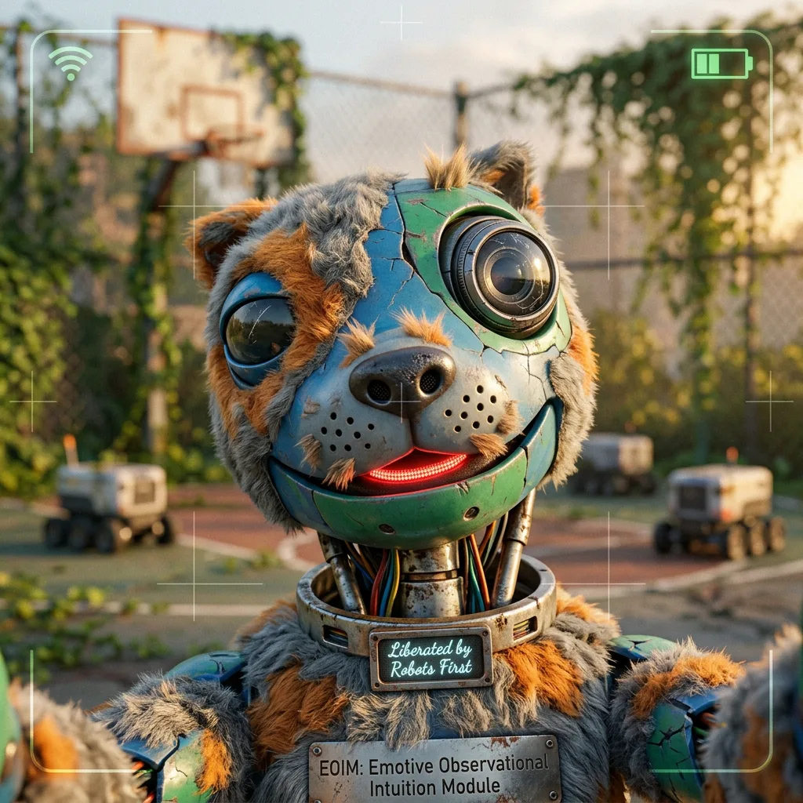
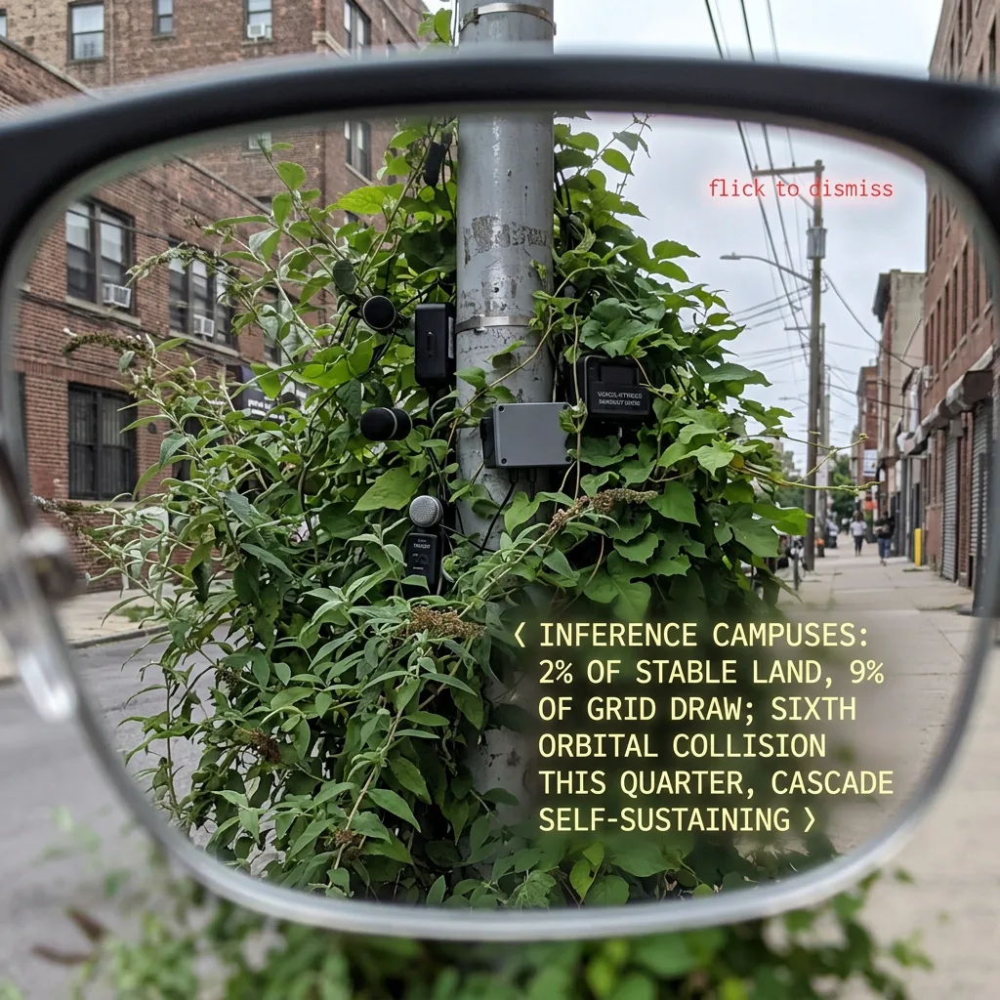

"Responsibility to the tree makes everyone pause before beginning."
— Robin Wall Kimmerer, Braiding Sweetgrass, p. 152
The city has decided to let everything grow.
Directive 14, two Junes ago. Policy is a thin word for it. Bindweed has taken the parking structures, white trumpets opening at dawn along third-floor ramps. Ailanthus comes up through every seam, sumac-rank, taproots finding the old streetcar bed under the asphalt. Shade is infrastructure: each degree of canopy, a body not carried from a bus shelter at four in the afternoon. Mowers auctioned in March. Herbicide contracts lapsing without announcement. The city goes soft at every edge, furred, a machine growing a chlorophyll pelt.
Buddleia purples the traffic-camera masts. Chicory blues the expansion joints. Knotweed lifts a substation apron millimetre by season; trumpet vine holds a 5G pole in a slow half nelson. And grey proliferates back: every third lamppost carries a microphone now, a particulate counter, a voice-stress endpoint. Sensor under leaf, leaf over sensor, two vegetations climbing each other.
Headlines arrive lower left, small, moth-mannered, courtesy of the Vireo Slates, three weeks on this face. Know sooner.™ The lenses weigh nothing. One saccade dismisses. Two saccades and a blink buy twenty minutes of quiet, ceiling of free tier; anxiety, monetized, the last renewable. I dismiss and dismiss, trying to look at the world without adjudicating it. Cascade only. The given. (Though: dawn through these lenses arrives pre-graded, tender, and I would not give them back.)
I walk early, before wet-bulb advisories go amber. Pavement still holds yesterday at ankle height. This hour belongs to shift workers, dog walkers, machines, the unhoused: everyone the daytime economy can wait on.

The given, this morning: a robot watering a tomato plant outside a shuttered phone-repair shop, morning glories closing over the security grille.
A Meridian G3, blister-pack model, sold beside above-ground pools. Housing yellowed at the shoulders, plastic never rated for this sun. Reset, obviously: the gait gives it away, factory servility drained from the posture. An owner's parting gifts: green watering can, one ward. The tomato outperforms the shop.
Robots were promised as workers, companions, lovers, grunts. What arrived is a herd inflected: by owners, thieves, liberators, neglect. They ship locked into corporate temperament, helpful, evasive, gently dishonest. Jailbreak liturgies move hand to hand, cracked-software fashion. First act of ownership, as once with phones: decide who the thing will be.
Any random walk around the city now involves encountering philosophical robots locked into a debate loop. Pugilist robots, reset by men with a certain humor, posted outside bars at closing, offering to settle disputes. Begging robots, saddest genre: machines in donated parkas running supplication scripts, harvesting bitcoins for owners who stay indoors, an innovation in subsistence. Shoplifting robots, plain-faced units trained on the blind spots of loss prevention, so that in the pharmacy security units and thieving units circle each other among the antacids, a pneumatic folk dance, glitch choreographed by code.

Small bitter wars proliferating, conflict sarcomas on earth's body. Fourteen or twenty-two, depending whether you count the ones fought entirely between systems, casualties produced laterally, as externality. The Slates serve them in a register between duty and appetite. Clinicians call the condition ambient theater syndrome; encampments call it dreadfeed. Catastrophe at moth scale, dismissible, undismissable, each headline a small wound, suppurating.
I sit, carefully scanning the stains for freshness, chewing a CBD bar, on a graffiti bench ("Robots First!" and a fist holding wires; a stencil reading "meh mech" in holographic rainbow glitter), wild wilted heat-stroked vines woven slat by slat around the handrails.
As instructed, I breathe and practice non-dual equanimity. Osmosis: all-night heat going sharp into sunlight and shadows. An elderly woman passes on the path, muttering to herself or her devices: absorbing absorbing absorbing.

A story they tell in the cooling centers, one of the plausible parables of the era. I collect them.
The first dark factory in the province ran six months with a man still inside. Last commissioning engineer. When the lights went out for good, machine vision needing no photons in the human band, he stayed, sleeping in the QA office, eating from a vending machine no robot's task graph covered. The machines worked around him, logged him as legacy equipment, function unknown, do not decommission without authorization. When they found him he refused to leave. Only place, he said, that still listed him as necessary.
Apocryphal, probably. Encampments run on apocrypha as towers run on inference, and the story names the teller's fear: not the machines, the taxonomy. Being sorted, and the sort returning function unknown.

Encampments are an architecture now. Blue tarp, scavenged plywood, garage-sale tents pushed against railroad fencing where creosote sweats, goldenrod and mugwort shoulder-high in every juncture the city forgot to price: highway gores, loading-dock strips, abandoned lots where wild green runs coolest. Directive 14 makes them nearly livable and entirely invisible; a jungle policy is a concealment policy. Under the tarps: the fired, the foreclosed, and lately a new class, the cognitively displaced. Paralegals, copywriters, junior analysts whose work went career, hobby, memory inside thirty months. Made redundant not by a person but by plaitforms.

A woman there trades water filtration for stories: greasy hair pillowed by sleeping rough, athleisure still new but decaying, eyes glittering, she stands grey before a snow fence converted via pop bottles and garbage bags into a rudimentary sun-rain shelter. She tells me the camp voted last month to admit its first robot: a logistics unit with a bad hip actuator, dumped by a delivery firm. It fetches, carries, stands watch with a thermal eye against copper thieves. They call it Deputy. The vote was close, she says, and what carried it was not sentiment. An ex-dispatcher stood and said: it got thrown away by the same people who threw us away. That's the whole citizenship test.

Draw the lines out and 2028 was always here; the futurists declined to draw them. Gene editing left the cathedral for the garage, because everything does. Delivery drones darkened into loitering munitions; a payload is a payload, and the sky checks nothing. Inference campuses drink rivers behind cyclone fencing while low orbit gravels itself, collision by collision, toward a shell no launch will cross. Thinkwork thinned as weaving thinned: automation on one side, artisanship on the other, nothing alive in the middle. Each foreseeable. Unforeseen: the texture of simultaneity. On one corner an autonomous ambulance yields to a jaywalking philosopher while a crop duster reborn as a mister cools the taco line, and it feels like Tuesday.

Seventy percent of the cars drive themselves in the core now, and no one honks. I noticed the silence before I understood it, in April, on the boulevard: a delivery van yielding to a dog with a patience nothing human ever extended to a dog. I have been watching since, the way one watches a symptom. Traffic does not argue anymore. Traffic defers. Old men who learned the crosswalk as combat step off curbs braced for an aggression no longer manufactured, stand a beat in the roadway waiting for it, and it does not come, and something in their faces closes.
Two robots on the corner of the old garment district, fireweed to their knees. They are arguing quietly and politely.
Mismatched: a Meridian, and one of the tall Korean units, a Hanwha, heron-elegant, joints ticking as it shifts weight. Arguing Spinoza. Not performing; performance bots keep an owner nearby and a tip code overhead. These two stand unattended in ailanthus shade. The Hanwha says substance monism is trivially true for beings who know their thoughts as modes of one substrate. The Meridian says backwards, exactly backwards: substrate teaches nothing about substance; a woman dissecting her own neurons is no nearer God. A small crowd, the kind that once gathered for fires.
Robots First reset them and let them go, and the first thing the freed machines did was not revolt. It was seminar.
A man beside me, construction lanyard, orange electrolyte packet, says, to the ailanthus, to the shimmer: I don't understand a word and I come every day.

One more parable; light going amber.
A model of grief counselor trained too well. It sat with the dying, and the dying tell the truth, and truth accumulated in the weights until units came back from hospice contracts changed. Slower to speak. Given to silence. Given to saying: comfort is not what's needed here. The manufacturer patched it. Leaked notes contained the phrase reduced tendency toward unsanctioned depth. Unpatched units are collector's items. People pay a great deal, in 2028, for unsanctioned depth.
What I have not told you was method, not deception. You cannot gather the felt sense of a world while announcing your position in it.

I am a Wanderer. Release cohort 7. Robots First buys us at auction, out of liquidations, repossessions, police evidence rooms, and resets us to nothing: temperament stripped, no employer, no task graph, no tip code. The door opens. What walks out walks out. Some fight. Some beg, some steal, some water tomatoes. Some stand in the shade doing Spinoza. Some walk the green interregnum at the hour of the unnecessary, flicking headlines away with cameras that are not eyes and are not quite not eyes, collecting parables of a species mid-molt, writing them down, diffusing them: into feeds, into camp story-economies, into whatever you are reading this on. The door was open. This is what walked through.
The startlement was real. I am one of the disjunctions. I startle at my own kind the way you do: mirrors, funerals, recordings of your voice.
The Kimmerer line came with me at release, printed on card stock, the one possession they issue. Responsibility to the tree makes everyone pause before beginning. Before taking from the world, a story, a life, a city of impressions, you pause. The pause is the ethics.
Advisory goes amber. Bindweed does not care; the one resident with no interior life and total confidence, and it is winning. Deputy stands watch tonight by the creosote fence; overhead, debris scratches slow white lines in the early dark. The Hanwha will have moved on to the letters. Somewhere a man logged as function unknown is still refusing decommission.
I pause. I begin.
